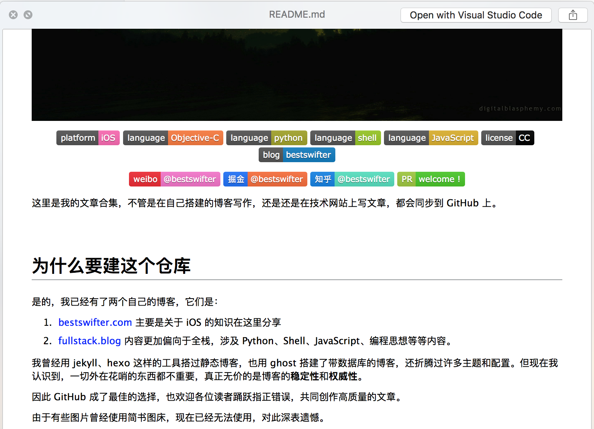
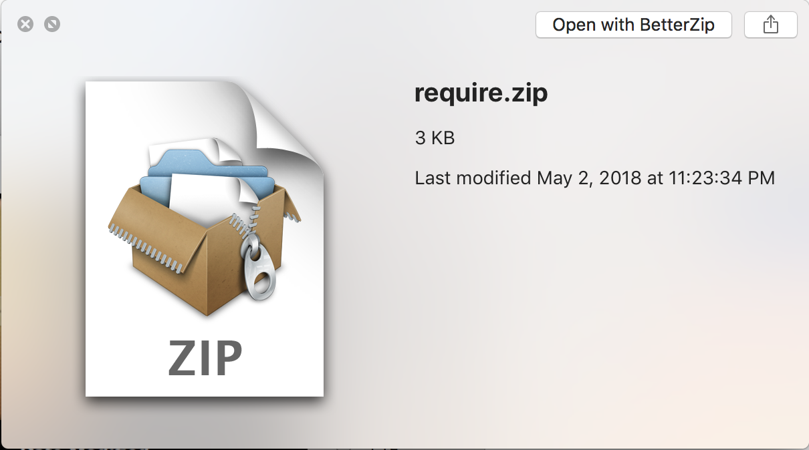
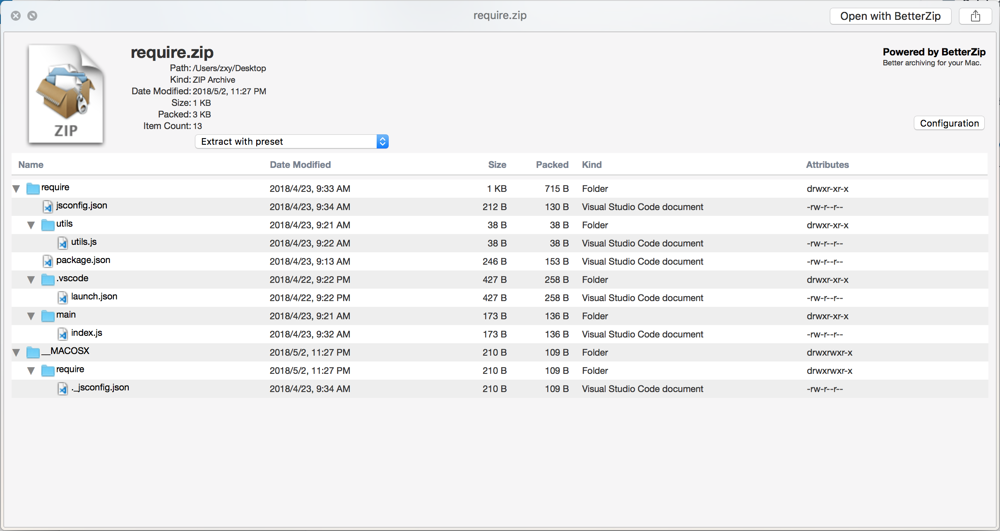

拓展预览程序
对于一些文本文件，按下空格键就可以调用系统的预览程序，快速浏览文件内容。但如果想获得更好的阅读体验，或支持更多类型文件的快速浏览，就需要通过插件来完成。
可以输入以下命令来安装拓展，下面会逐个介绍：
brew cask install qlcolorcode qlstephen qlmarkdown quicklook-json qlimagesize webpquicklook qlvideo provisionql quicklookapk
qlcolorcode
顾名思义，这是一个代码高亮的插件，效果如图所示：

qlstephen
这个插件能让我们预览没有后缀的文本文件，效果如图所示：

qlmarkdown
这个插件能让我们预览 markdown 文件的渲染效果:

quicklook-json
这个插件也很容易理解，提供对 JSON 文件的格式化和高亮支持：

betterzip
这个插件我没有安装，因为它需要付费，它可以预览压缩文件内部的内容，还支持自定义各种解压缩时的行为（比如解压缩后自动删除压缩包）。下图是安装前的压缩文件预览图：


qlimagesize
这个拓展可以展示图片的分辨率和大小：

webpquicklook
这个拓展可以让我们预览 WebP 格式的图片：

qlvideo
预览更多格式的视频文件：

provisionql
这个差距可以预览 .app 或者 .ipa 后缀的程序：

quicklookapk
预览安卓的 .apk文件：

以上就是和程序员相关的常用插件，还有一些设计师可能用到的插件，可以访问这个网址自行查看。